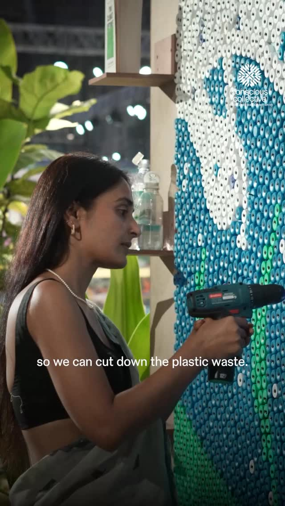
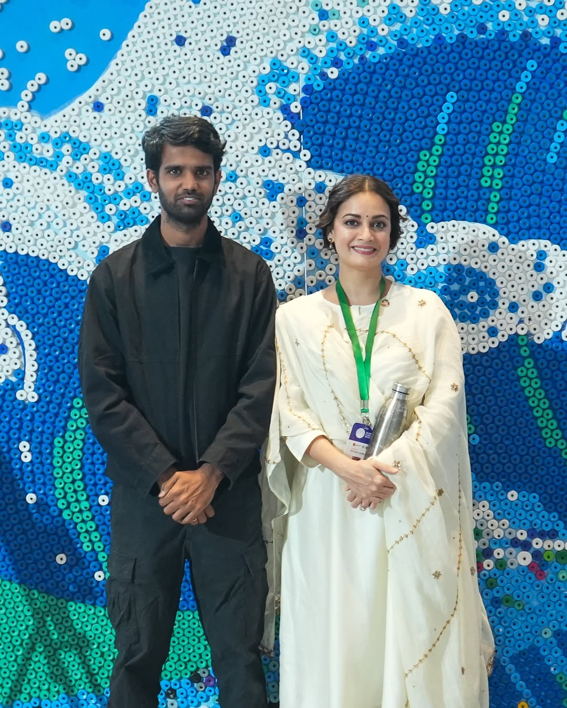
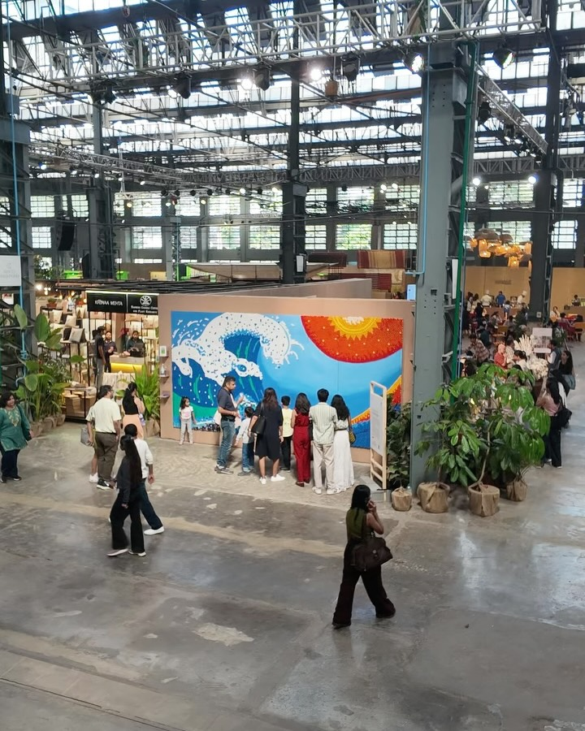
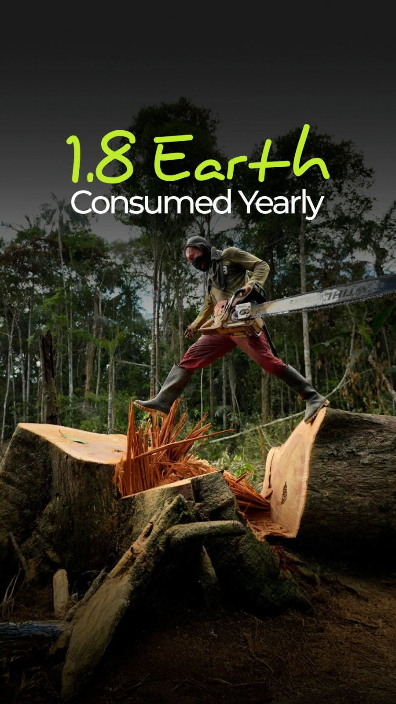
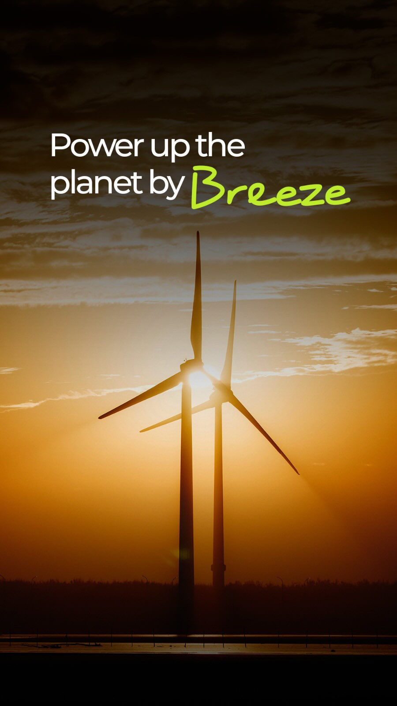
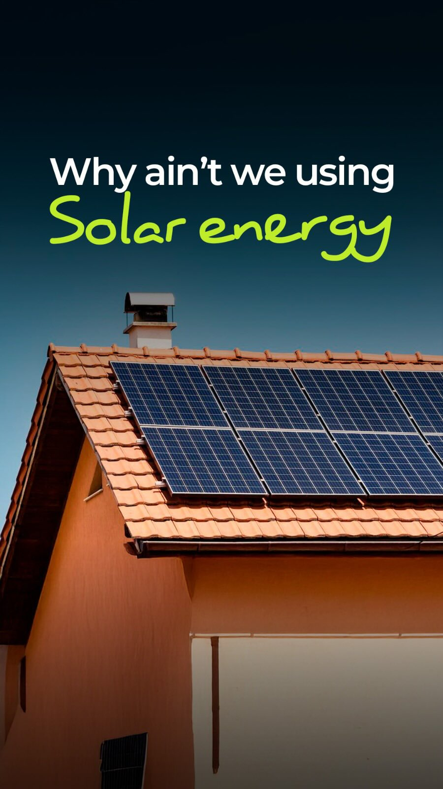
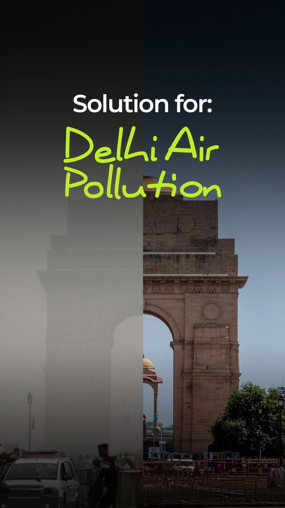

This gallery showcases some of the recent events across India garnering public interest across art and culture. Including notable industry and public figures.
Greener Earth is a foundation driving change through policy, public art and citizen action to address environmental challenges. Lasting impact doesn’t come from governments or organisations alone, it comes from people choosing to act.







